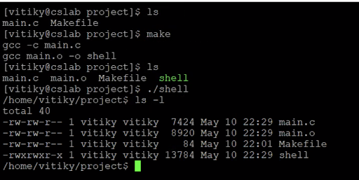

Functional Command Line
Demonstration of the shell executing a command to list to contents of a directory, as well as the associated permissions with each result.
This project was done as part of Professor Rafael Ubal Tena's Operating Systems course at Boston College. It interacts directly with the user's UNIX operating system in order to execute commands as they would be written in a UNIX command shell. This shell implementation supports:
- input and output redirection
- background execution
- command piping and
- forking